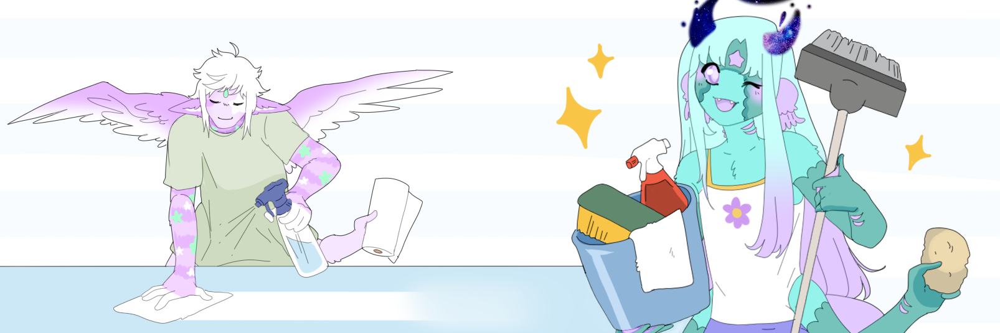
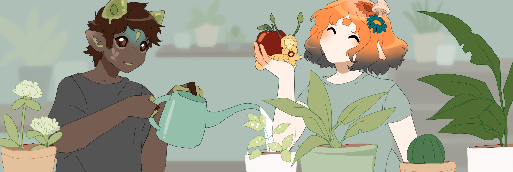
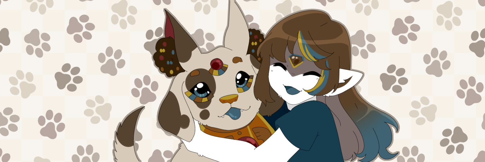
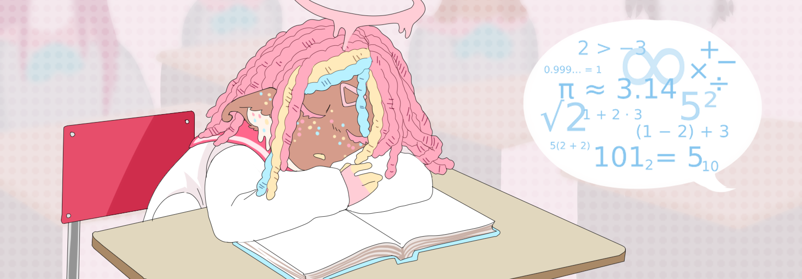

Rules!
These rules are universal for all achievement entries.By submitting entry, you are agreeing to these terms.
The use of AI in your entry in ANY way, theft in general, or other misconduct will disqualify you and revoke your right to entry into achievements in the future.
To qualify your entry must-
- prominently feature one or more approved Candyfloss
- follow the theme/requirements for the specific achievement
- abide by the Candyfloss TOS
- be completely made by you, aside from credited assets. You cannot collaborate on your entry.
- be made specifically for this achievement.
- accurately portray Candyfloss anatomy and cannon lore to the best of your abilities.
Art Entries
- must be completed past the line art stage- provide credits to all assets used, bases are okay as long as its obviously credited!
-comic panels are ok but not needed
- By submitting for an Achievement you consent to your art and or stories to be displayed on the homepage, your achievement page or the CF official discord with proper credit.
Chains
Chain games are taking place on toyhou.se threads! More specific rules and guides for the chain can be found there!Stories
- be between 1000 and 5000 words- be written in English
-be posted to a google doc or in a toyhou.se literature post

Spring Cleaning Art Prompt
Art PromptSpring is here! The Candyfloss are celebrating the start of a new season by cleaning their homes, ridding themselves of the junk they've accumulated and washing clean their chakras with some good old fashion scrubbing bubbles! Draw your Candyfloss getting clean or cleaning their space for this prompt! Whether it's hoovering up a storm, or frothing up some bubbles in the bath, the Candyfloss are getting clean in the Spring Cleaning Prompt!
Submit
House Plants Art Prompt
Art PromptLet it grow! Candyfloss with green thumbs unite in this prompt! Floss of all sorts adore gardening! Whether they are the type to burn through potted plants faster than a Kappafloss can sprint, or if they are a respectable plant-mom and have a house filled with greenery, we want to see their beloved potted plants! Enter the House plants Art Prompt
Submit
Dog Days Chain Game
Art ChainFrom Paizo pups, to Anijuru, to Rushounds and more! The Candyfloss just adore their loyal companions! We are giving some love to our Dog type petpets this month with the Dog Days chain game! Join the chain to draw the above floss with their furry companion! Come jump into the Chain game to give some pats and paws and see those tails wag! Join the Dog Days Chain game!
Enter
First Day of School Story Prompt
Lit PromptSchool is in session! So many exciting things can happen when a young floss sets out to their first day of school! Whether it's the exciting new world of kindergarten, the drama filled high school days, or the party-filled adventure of college, anything can happen when a floss steps into a new life in a new school! Write a short story about your candyfloss' first day at a new school! What wacky shinnanigans or prospective love stories await them? Maybe they're joining a super hero school to learn to use their powers for good, or maybe they're joining a sensei to learn the ways of the Thetan Shinobi or the Epsilonion monks! We want to hear all about their chaotic first day! Enter the First Day of School Short Story Prompt!
SubmitFloss of the Month
Nyree is a young adult born to an Iotan father and his Lambdan sweetheart, raised in the comfort of luxury in Iota. Her father came from generational wealth as well as his father’s ties to mafioso, which comes back to haunt him. She met her best friend, a Theta girl named Posey, when she was a youth, and despite being raised as a typical Betan, she became Posey’s number one defender against Thetan and trufflephobes. When Nyree turned 15 eyo, she lost her father in a car accident and she became closed off for a while, in the meantime her mother decided to move from clan to clan for work, where she met many different floss of different clans and became friends. She even met a girl named Isobel and started dating her long distance until she bought a cottage in Delta and moved in with her. There, Nyree created a beautiful garden, using her passion to create a living by beekeeping and painting. Her relationship with Isobel fell apart after a year and a half eyo and she moved back to Beta and lived with her best friend Posey. She met a Betafloss named Junko and the two hit it off and are now dating. Nyree’s mother gave birth to her half-sister during her time back in Beta, thrilling her as she always wanted to be a big sister. A year later, war broke out in Theta, changing Nyree’s best friend irreparably and changing her views on her homeland of Beta forever. She moved to Lambda alongside her mother and baby sister, where she now has another blossoming garden, resuming her life as a botanist and artist as best she can after all the uncertainty of the world around her. Nyree belongs to the ever so lovely FadedFaeble! Faeble has been a longtime member of the candyfloss community, often seen in the discord and participating in our events. Faeble is a wonderful designer and artist, you’ve probably seen one of their petpets! She’s friendly and always excited to see what our other members are doing. Thank you for being part of the Candyfloss community, Faeble! SubmitAll Achievements!
Check out all the achievements you can complete! You can see which achievements you have already
completed by checking your personal Achievements List!
You can earn 1 coin for completing an
achievement for the first time!